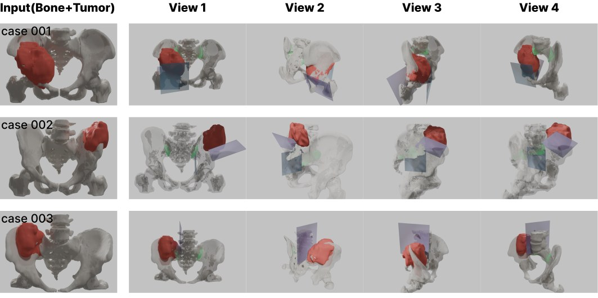
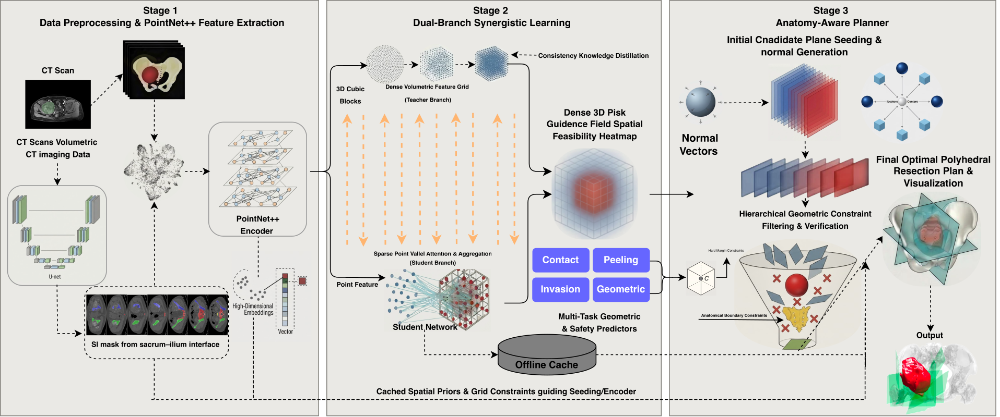
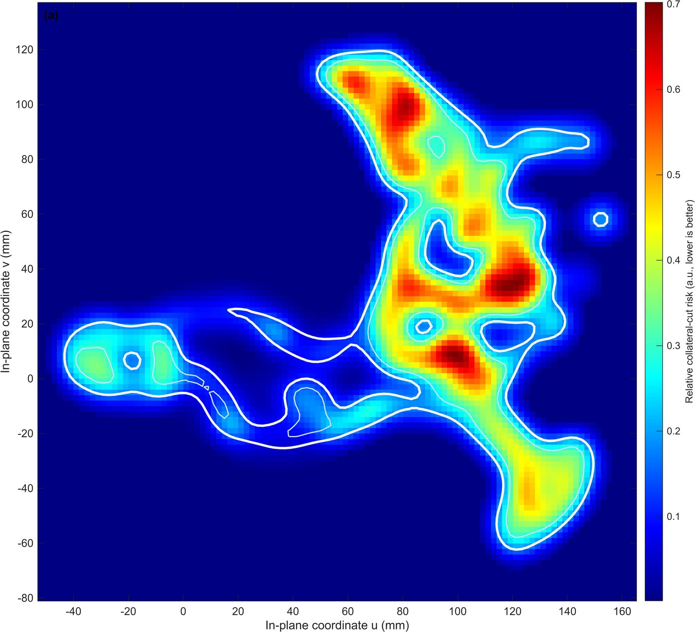
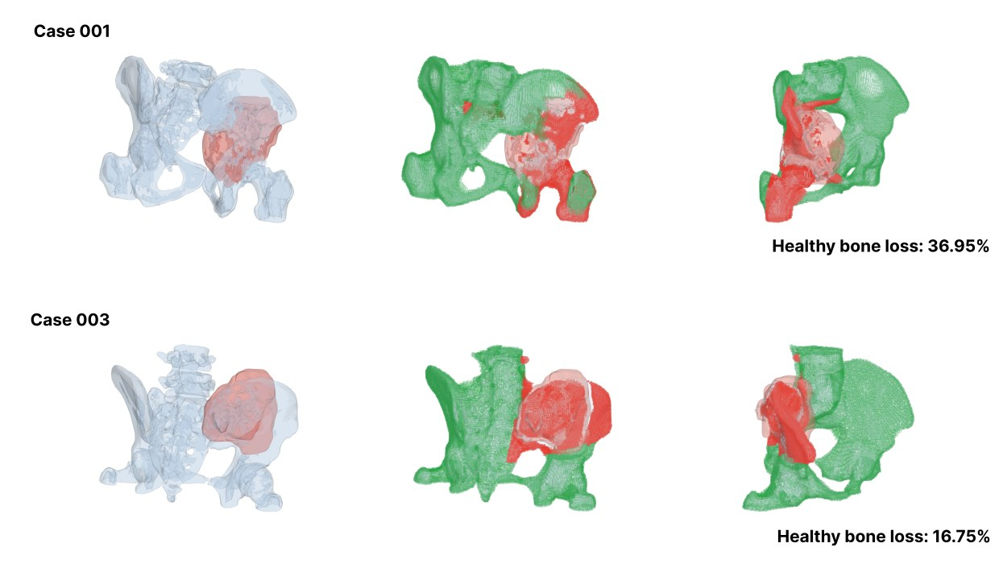

Bone Tumor Osteotomy Planning
An automated resection planner for pelvic bone tumors. It learns where the anatomy is risky, then guarantees, by construction, that every cutting plane it recommends clears the tumor by the prescribed margin.

Three clinical cases. Left: the input pelvis (gray) and tumor (red). Right: four views of the recommended cutting planes (blue) and the fitted sacroiliac peeling regions (green).
#The problem
Removing a bone tumor from the pelvis is a fight between two goals. The surgeon needs a wide margin around the tumor, because a marginal resection roughly quadruples the chance the tumor comes back. But the pelvis is crowded with nerves, vessels, and the sacroiliac joint that holds the pelvic ring together, so every extra millimetre of margin costs function. Today this trade-off is planned by hand in virtual-surgery software, which is slow, varies between planners, and is frozen once the patient-specific guides are printed.
Automated planners exist, but they sit at two unsatisfying extremes. Pure geometric search is fast but blind to anatomy. Learned models understand anatomy but regress plane parameters directly, with nothing stopping them from proposing a plane that cuts through the tumor. For surgery that is not an acceptable failure mode.
#What I built
A planner that keeps the two sides separate: a learned part decides where good cuts probably are, and a deterministic geometric part decides whether a cut is safe. The learned part can only shape which candidates get proposed and how they rank. It cannot make an unsafe plane safe.

- Point-wise priors. CT segmentations of bone and tumor become point clouds in millimetre coordinates. A PointNet++-style encoder–decoder labels every point with anatomy and a continuous tumor-proximity risk score, and the sacrum and ilium are segmented with the open CTPelvic1K model so the sacroiliac joint can be found later.
- Planning cues. A voxel-level teacher network learns spatially smooth safety fields over the whole pelvis; a lightweight point-wise student distils them into four signals a planner can use: contact risk, peeling feasibility along bone interfaces, the tumor's invasion direction, and geometric importance. Stage 1 says where things are risky; stage 2 says which directions are worth cutting from.
- Generate, correct, select. Candidate planes are seeded from geometry and from the cues. Each one is analytically pushed outward until the whole tumor sits at least 10 mm behind it, then verified on a finite cutting footprint. Near-duplicates are suppressed, and the survivors are ranked by how well they respect bone blocks, the sacroiliac joint, and a realistic surgical approach along the iliac crest. The top five are returned.
#How the safety guarantee works
The margin is not a loss term or a soft penalty. For a candidate plane, the planner computes the signed distance of every tumor surface point to the plane, orients the normal so the tumor lies behind it, and if the closest tumor point is nearer than the margin, translates the plane along its normal by exactly the shortfall. The corrected plane satisfies the margin by construction, and a numerical check on the finite plane guards against sign and floating-point mistakes. Because this runs on every plane individually, each recommended cut is independently tumor-safe, and the surgeon can pick any subset of them.

#What it does on real cases
I evaluated the planner on 20 pelvic osteosarcoma cases from Jishuitan Hospital, with a 10 mm tumor margin and a 5 mm sacroiliac clearance threshold. On every case, all five recommended planes met the margin: 100% target-margin coverage on the returned set. Sacroiliac clearance was preserved where anatomy allowed it, and where a tumor sat against the joint the planner deliberately kept one joint-adjacent plane as an option rather than hiding it. Ranking ablations that share the same safe candidate pool show the learned cues mostly change which safe planes are recommended, not whether they are safe, which is the intended division of labour.
